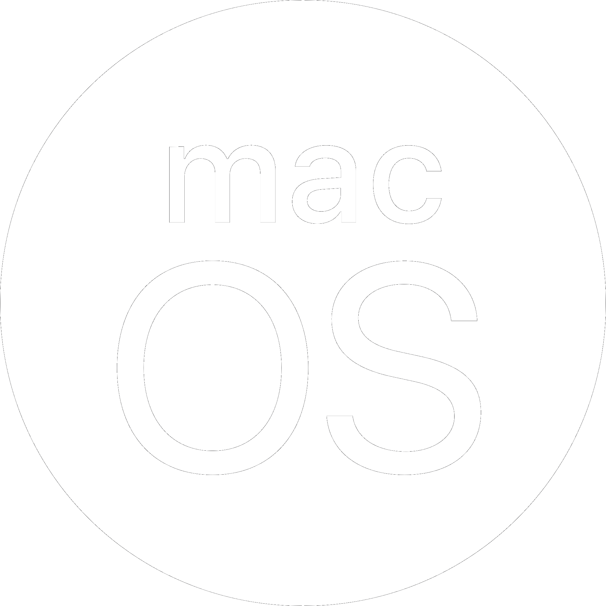

Kenapa Mac OS ?macOS telah memainkan peran penting dalam perkembangan industri kreatif, dan terus menjadi platform pilihan bagi para profesional di bidang ini. Apple berkomitmen untuk terus mengembangkan macOS dan memberikan pengalaman terbaik bagi penggunanya. |
 |
|---|
Awal Mula
1984
- Apple memperkenalkan Macintosh, komputer revolusioner dengan sistem operasi grafis bernama System 1.
- System 1 menawarkan antarmuka yang mudah digunakan dengan ikon, menu, dan mouse.
Era Klasik
1984 - 1990an
- Sistem operasi Apple berkembang pesat dengan System 2, 3, 6, dan 7.
- Fitur-fitur baru ditambahkan, seperti multitasking, multimedia, dan konektivitas internet.
- System 7 menjadi sistem operasi klasik terakhir Apple.
Era Modern
1997an-sekarang
- Apple merilis Mac OS 8, sistem operasi modern pertama mereka.
- Mac OS X (2001) menghadirkan perubahan besar dengan arsitektur Unix yang stabil dan aman.
- macOS (sejak 2016) merupakan versi terbaru sistem operasi Apple, dengan fokus pada peningkatan performa, desain, dan integrasi dengan perangkat Apple lainnya.